索引
普通索引
最基本的索引，没有任何约束。
唯一索引
与普通索引类似，但具有唯一性约束。
主键索引
特殊的唯一索引，不允许有空值。
复合索引
将多个列组合在一起创建索引，可以覆盖多个列。
最左匹配特性
假如存在复合索引(name, age, sex):
(张三, 20, F): 优先比较name，如果name相同，再依次比較age和sex。
(20, F): 将不会走该索引。
(张三, F): 先查询出name=张三的数据，然后再过滤出所有sex=F的数据。
最左前缀匹配原则，MySQL会一直向右匹配直到遇到范围查询(
>、<、between、like)就停止匹配，比如a=3 and b=4 and c>5 and d=6,如果建立(a,b,c,d)顺序的索引，d是无法使用索引的，如果建立(a,b,d,c)的索引则都可以使用到，a、b、d的顺序可以任意调整。=和in可以乱序，比如
a=1 and b=2 and c=3建立(a,b,c)索引可以任意顺序，MySQL的查询优化器会帮你优化成索引可以识别的形式。
外键索引
只有InnoDB类型的表才可以使用外键索引，保证数据的一致性、完整性和实现级联操作。
全文索引
MySQL自带的全文索引只能用于InnoDB、MyISAM，并且只能对英文进行全文检索，一般使用全文索引引擎(Elasticsearch、Solr)。
聚簇索引/密集索引
聚簇索引是将索引和数据都存放在叶子节点中。在InnoDB里，主键索引也被称为聚集索引(clustered index)。
非聚簇索引/辅助索引/二级索引/稀疏索引
非聚簇索引就是将数据和索引分开，查找时需要先查找到索引(索引文件仅保存数据记录的地址)，然后通过索引回表找到相应的数据。
InnoDB有且只有一个聚簇索引，其他都是非聚簇索引，而MyISAM中都是非聚簇索引。
- InnoDB: 需查询两次，先通过辅助索引查询到主键，再通过主键从聚簇索引中查询到数据。
- MyISAM: 叶子节点中保存的是行数据的地址，需要根据地址再寻址一次才能得到数据。
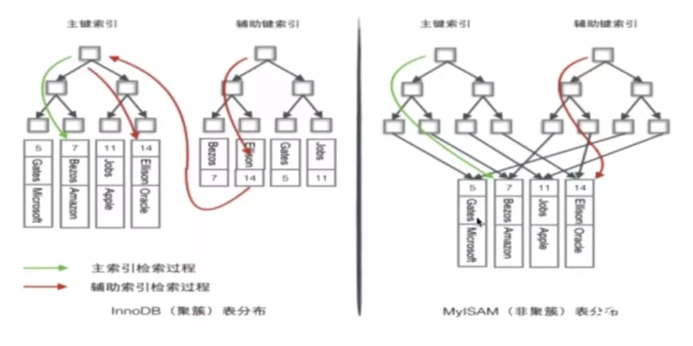
覆盖索引
覆盖索引(covering index)指一个查询语句的执行只用从索引中就能够取得，不必从数据表中读取。也可以称之为实现了索引覆盖。
当一条查询语句符合覆盖索引条件时，MySQL只需要通过索引就可以返回查询所需要的数据，这样避免了查到索引后再返回表操作，减少I/O提高效率。指的是基于非聚簇索引查询，但是查询字段只有主键ID ，那么在二级索引中就可以查找到。
如: 表covering_index_sample中有一个普通索引idx_key1_key2(key1,key2)。当我们通过SQL语句：select key2 from covering_index_sample where key1 = 'keytest';的时候，就可以通过覆盖索引查询，无需回表。
页/预读
系统从磁盘读取数据到内存时是以磁盘块(block)为基本单位的，位于同一个磁盘块中的数据会被一次性读取出来，而不是需要什么取什么。
InnoDB存储引擎中有页(Page)的概念，页是其磁盘管理的最小单位。InnoDB存储引擎中默认每个页的大小为16KB(show variables like 'innodb_page_size';).
而系统一个磁盘块的存储空间往往没有这么大，因此InnoDB每次申请磁盘空间时都会是若干地址连续磁盘块来达到页的大小16KB。InnoDB 在把磁盘数据读入到磁盘时会以页为基本单位，在查询数据时如果一个页中的每条数据都能有助于定位数据记录的位置，这将会减少磁盘 I/O 次数，提高查询效率。
B-Tree
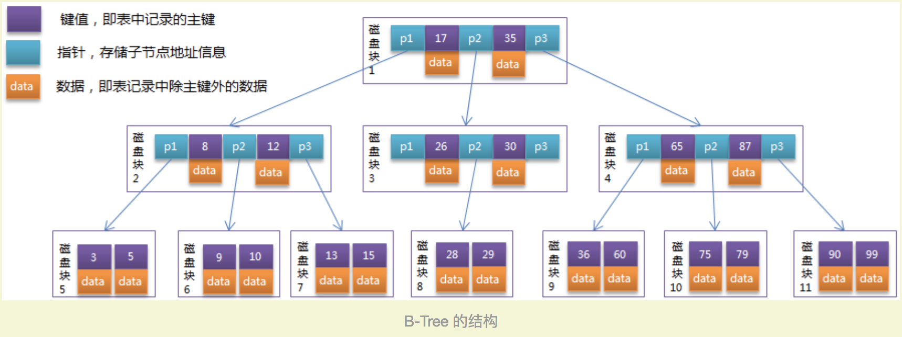
從B-Tree结构图中可以看到，每个节点中不仅包含数据的key值，还有data值。而每一个页的存储空间是有限的，如果data数据较大时将会导致每个节点(即一个页)能存储的key的数量很小，当存储的数据量很大时同样会导致B-Tree的深度较大，增大查询时的磁盘I/O次数，进而影响查询效率。
在B+Tree中，所有数据记录节点都是按照键值大小顺序存放在同一层的叶子节点上，而非叶子节点上只存储key值信息，这样可以大大加大每个节点存储的key值数量，降低B+Tree的高度。
B+Tree
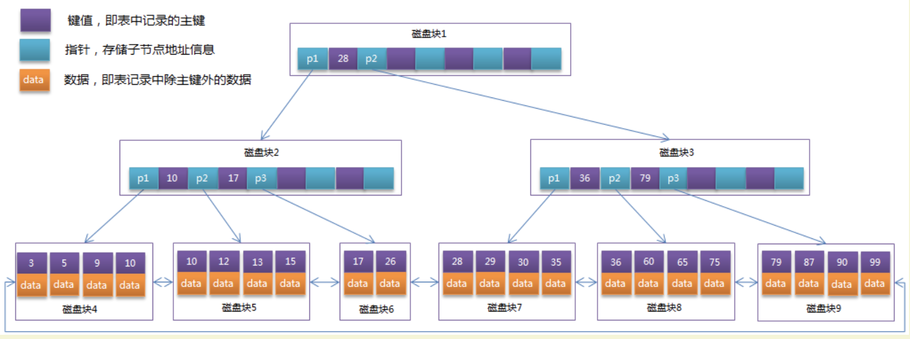
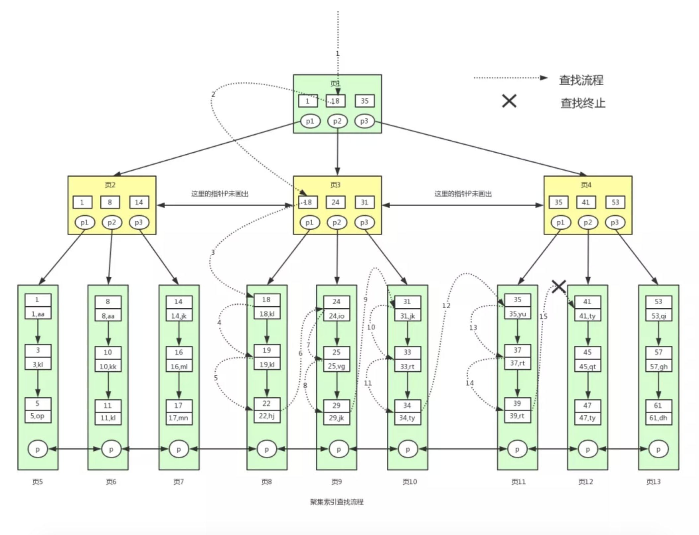
单页，以及前一页和后一页的指针
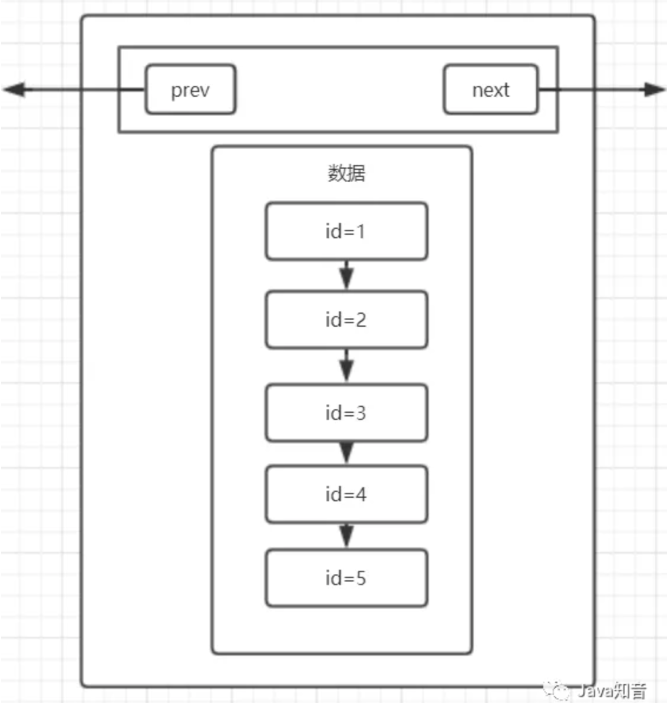
引入页目录加快查詢(插入时进行排序的原因)
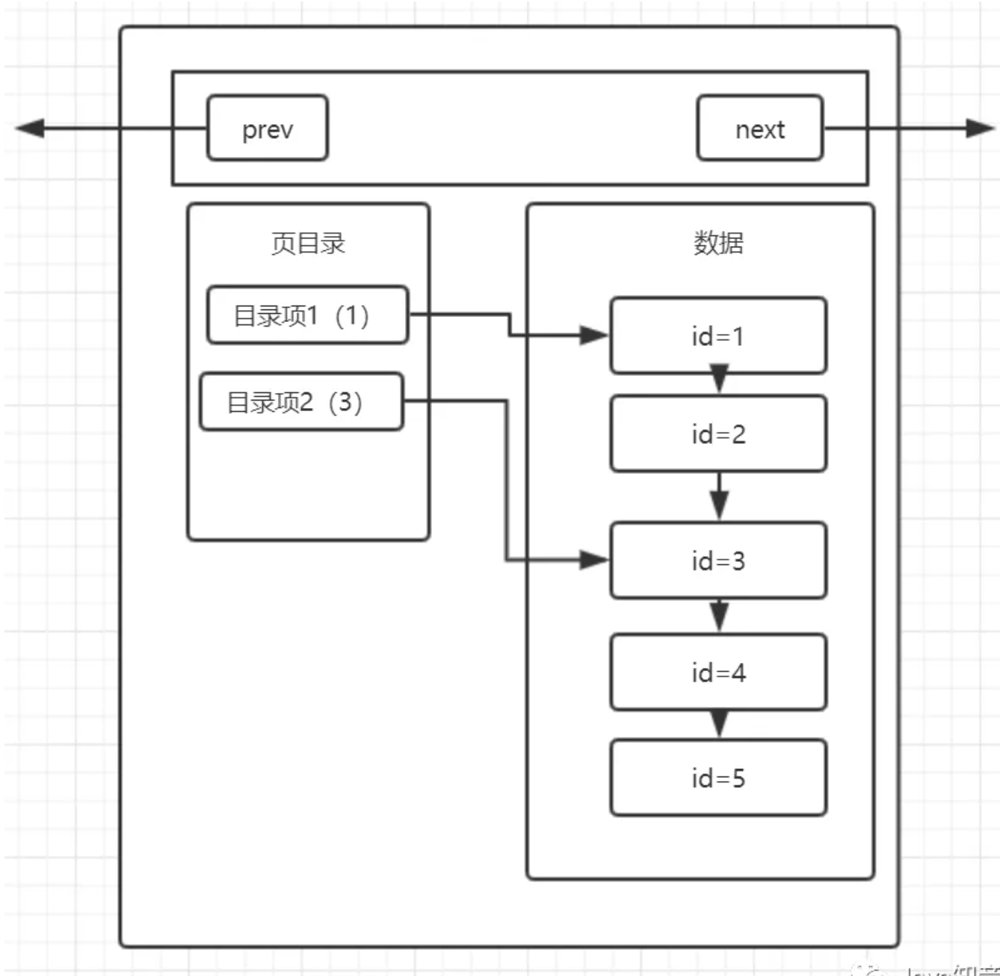
多頁
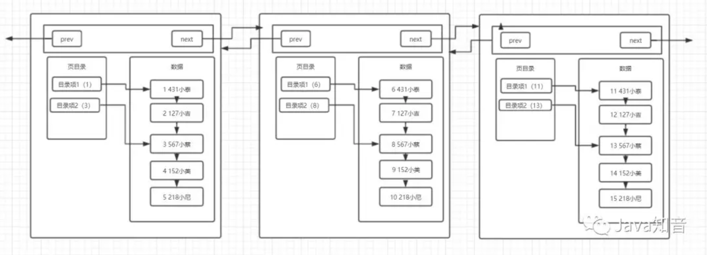
多页和目录
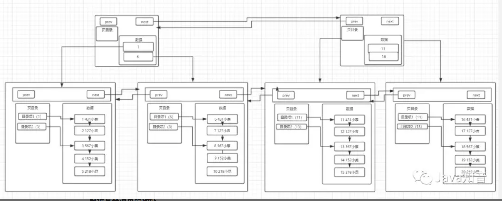
宏观图
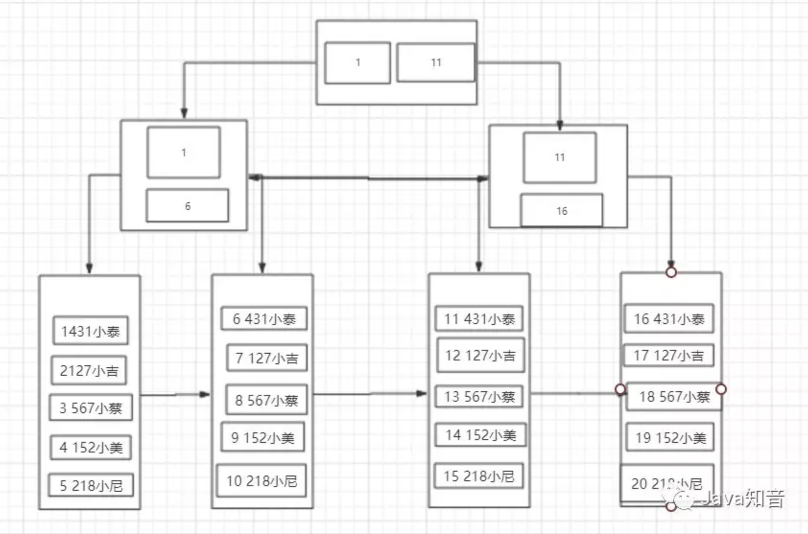
MyISAM B+Tree
可以看到MyISAM叶子节点中保存的是行数据的地址，需要根据地址再寻址一次才能得到数据。
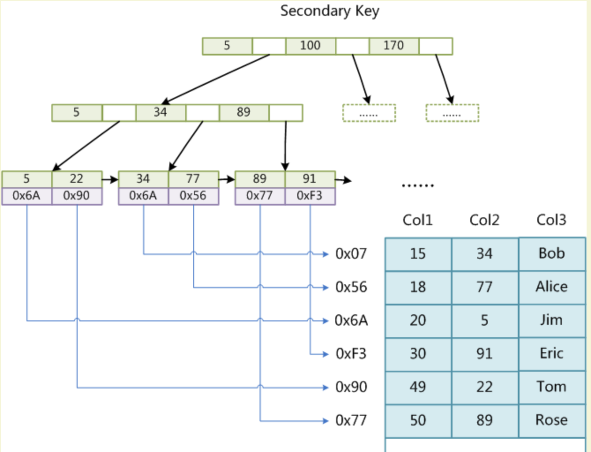
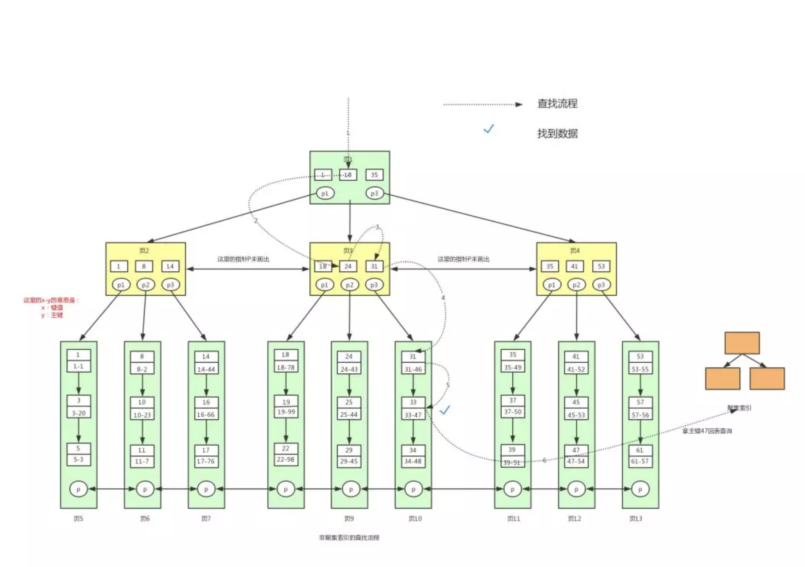
事务
事务就是对一系列的数据库操作(比如插入多条数据)进行统一的提交或回滚操作，如果插入成功，那么一起成功，如果中间有一条出现异常，那么回滚之前的所有操作。这样可以防止出现脏数据，防止数据库数据出现问题。
事务的特性
原子性 Atomicity：一个事务(transaction)中的所有操作，或者全部完成，或者全部不完成，不会结束在中间某个环节.一致性 Consistency：应用系统从一个正确的状态到另一个正确的状态.而ACID就是说事务能够通过AID来保证这个C的过程.C是目的,AID都是手段.隔离性 Isolation：数据库允许多个并发事务同时对其数据进行读写和修改的能力，隔离性可以防止多个事务并发执行时由于交叉执行而导致数据的不一致。持久性 Durability：事务处理结束后，对数据的修改就是永久的，即便系统故障也不会丢失.
事务的并发问题
脏读：事务A读取了事务B更新的数据，然后B回滚操作，那么A读取到的数据是脏数据。
不可重复读：事务A多次读取同一数据，事务B在事务A多次读取的过程中，对数据作了更新并提交，导致事务A多次读取同一数据时，结果不一致。
幻读：系统管理员A将数据库中所有学生的成绩从具体分数改为
ABCDE等级，但是系统管理员B就在这个时候插入了一条具体分数的记录，当系统管理员A改结束后发现还有一条记录没有改过来，就好像发生了幻觉一样，这就叫幻读。
不可重复读侧重于修改，幻读侧重于新增或删除。解决不可重复读的问题只需锁住满足条件的行，解决幻读需要锁表。
事务隔离级别
读未提交(
Read uncommitted)：事务中的修改，即使没有提交，对其他事务也都是可见的读提交(
read committed)：事务从开始直到提交之前，所做的任何修改对其他事务都是不可见的可重复读(
repeatable read)：一个事务按相同的查询条件读取以前检索过的数据，其他事务插入了满足其查询条件的新数据。产生幻行。串行化(
Serializable)：强制事务串行执行
| 事务隔离级别 | 脏读 | 不可重复读 | 幻读 |
|---|---|---|---|
| 读未提交 | 是(允許) | 是 | 是 |
| 读未提交 | 否(不允許) | 是 | 是 |
| 可重复读 | 否 | 否 | 是 (X) |
| 串行化 | 否 | 否 | 否 |
MySQL默认的事务隔离级别为可重复读(repeatable-read)
MySQL通过
MVCC+事务第一次调用SELECT语句才生成快照，实现其在可重复读(repeatable-read)的隔离级别下，不存在幻读问题，即上图X处，需要改成”否”
查詢隔离级别：SELECT @@tx_isolation;
锁
锁的粒度
表锁：系统开销最小，会锁定整张表，MyIsam 使用表锁。
行锁：最大程度的支持并发处理，但是也带来了最大的锁开销，InnoDB使用行锁。
Innodb的锁的策略为next-key锁，即record lock + gap lock，是通过在index上加lock实现的。如果index为 unique index，则降级为record lock行锁，如果是普通index，则为next-key lock，如果没有index，则直接锁住全表，即表锁。
锁机制
共享锁(读锁)：不堵塞，多个用户可以同时读一个资源，互不干扰
排他锁(写锁)：一个写锁会阻塞其他的读锁和写锁
悲观锁/乐观锁
悲观锁：依靠数据库提供的锁机制实现(即:共享锁和排他锁)，读取数据时加锁，其它事务无法修改这些数据。修改删除数据时也加锁，其它事务无法读取这些数据。
乐观锁：基于数据版本(Version)记录机制实现，通过版本号，从而实现CAS原子性更新(将提交数据的版本数据与数据库表对应记录的当前版本信息进行比对，如果提交的数据版本号大于数据库表当前版本号，则進行更新，否则认为是过期数据)
InnoDB是基于索引来完成行锁。例如：SELECT * FROM tab_with_index WHERE id = 1 FOR UPDATE。
FOR UPDATE可以根据条件来完成行锁锁定，并且id是有索引键的列,如果id不是索引键，那么InnoDB将完成表锁，并发将无从谈起。
MVCC多版本并发控制
并发访问(读或者写)数据库时，对正在事务内处理的数据做多版本的管理，用来避免由于写操作的堵塞，而引发读操作失败的并发问题。
MVCC并发控制下的读事务一般使用时间戳或者事务ID去标记当前读的数据库的状态(版本)，读取这个版本的数据。读、写事务相互隔离，不需要加锁。读写并存的时候，写操作会根据目前数据库的状态，创建一个新版本，并发的读则依旧访问旧版本的数据。避免了脏读和不可重复读。
索引优化
联合索引最左前缀原则
不要在列上使用函数和进行运算
负向条件查询不能使用索引
- 负向条件有：!=、<>、not in、not exists、not like 等
使用覆盖索引
- 所谓覆盖索引，是指被查询的列，数据能从索引中取得，而不用通过行定位符再到数据表上获取，能够极大的提高性能。
避免强制类型转换
范围列可以用到索引，范围列后面的列无法用到索引
- 范围条件有：<、<=、>、>=、between等
更新频繁、数据区分度不高的字段上不宜建立索引
索引列不允许为null
避免使用or来连接条件
前导模糊查询不能使用索引
Explain列
id：一般来说一个select一个唯一id，如果是子查询，就有两个select，id是不一样的，另外有些子查询的id是一样的(被優化為连接查询)
select_type：
- simple：不包括union和子查询的查询都算simple类型。
- primary：包括union，union all，其中最左边的查询即为primary。
- union：包括union，union all，除了最左边的查询，其他的查询类型都为union
type：访问方法
- ref：普通二级索引与常量进行等值匹配
- ref_or_null：普通二级索引与常量进行等值匹配，该索引可能是null
- const：主键或唯一二级索引列与常量进行等值匹配
- range：范围区间的查询
- all：全表扫描
possible_keys：对某表进行单表查询时可能用到的索引
key：经过查询优化器计算不同索引的成本，最终选择成本最低的索引
rows：
- 如果使用全表扫描，那么rows就代表需要扫描的行数
- 如果使用索引，那么rows就代表预计扫描的行数
filtered：
- 如果全表扫描，那么filtered就代表满足搜索条件的记录的百分比
- 如果是索引，那么filtered就代表除去索引对应的搜索，其他搜索条件的百分比
Extra：包含的是不适合在其他列显示的额外信息。
- Using where：意味着mysql服务器将在存储引擎检索行后再进行过滤
- Using index：表示mysql将使用覆盖索引，以避免访问表
- Using filesort：意味着mysql会对结果使用一个外部索引排序，而不是按照索引次序从表里读取行
- Using index condition：在存储引擎层使用索引过滤数据的一种优化方式
- Using temporary：这意味着mysql对查询结果排序时会使用一个临时表
- Using join buffer (Block Nested Loop)
- Using join buffer (Batched Key Access)
- Using MRR
SQL查询执行顺序
1 | (1) SELECT |
Redo/Undo
主从复制的流程
Master 上面的 binlog dump 线程，该线程负责将 master 的 binlog event 传到 slave 。
Slave 上面的 IO 线程，该线程负责接收 Master 传过来的 binlog，并写入 relay log。
Slave 上面的 SQL 线程，该线程负责读取 relay log 并执行。
如果是多线程复制，SQL 线程只做 coordinator，只负责把 relay log 中的 binlog 读出来然后交给 worker 线程， woker 线程负责具体 binlog event 的执行。
清理 MySQL binlog
1 | # 首先查看主从库正在使用的binlog文件名称 |